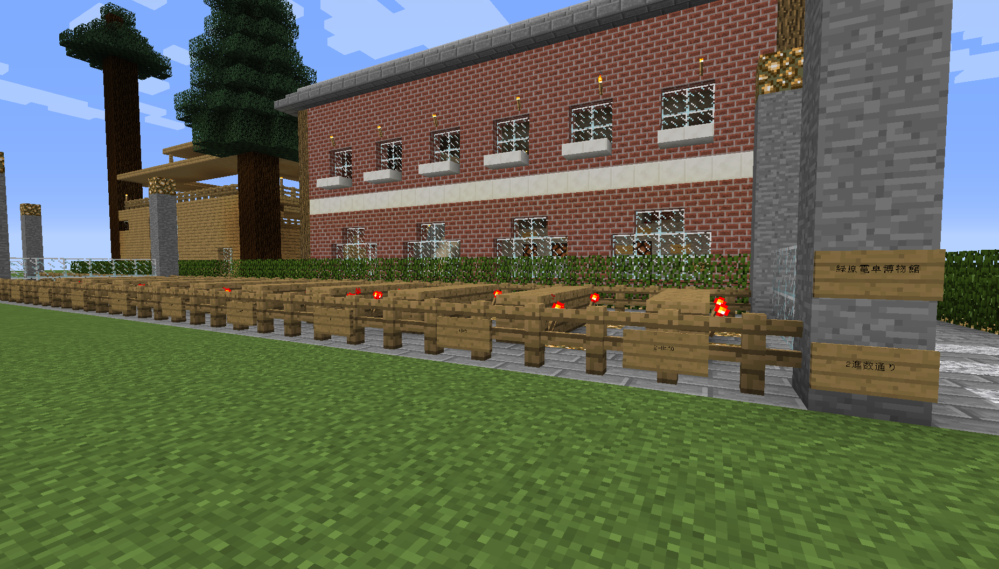
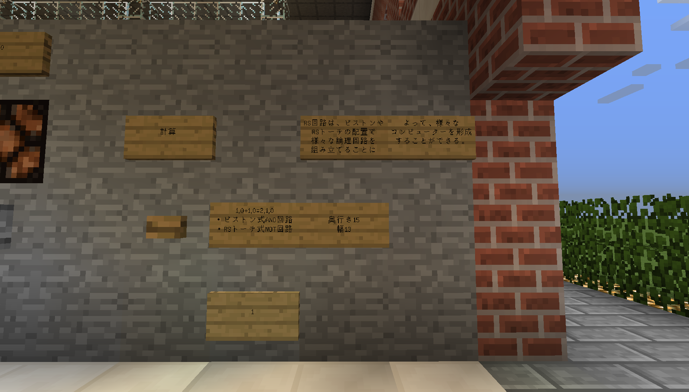
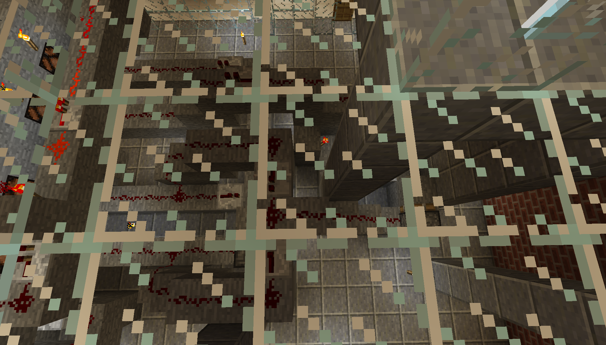
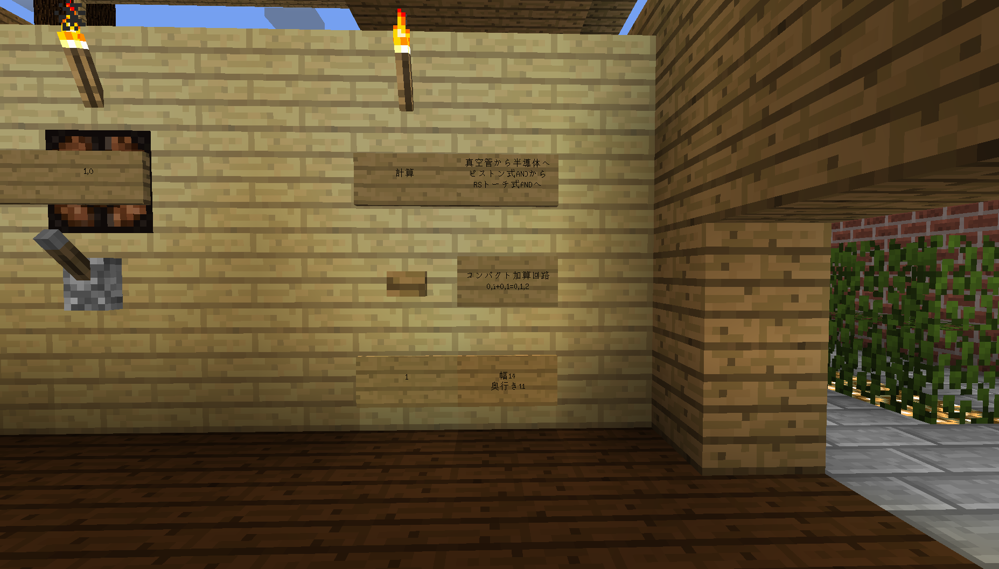
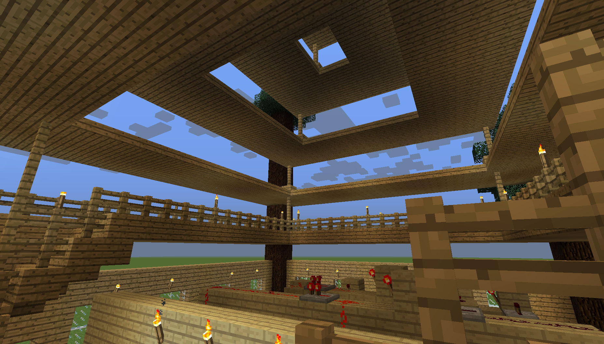
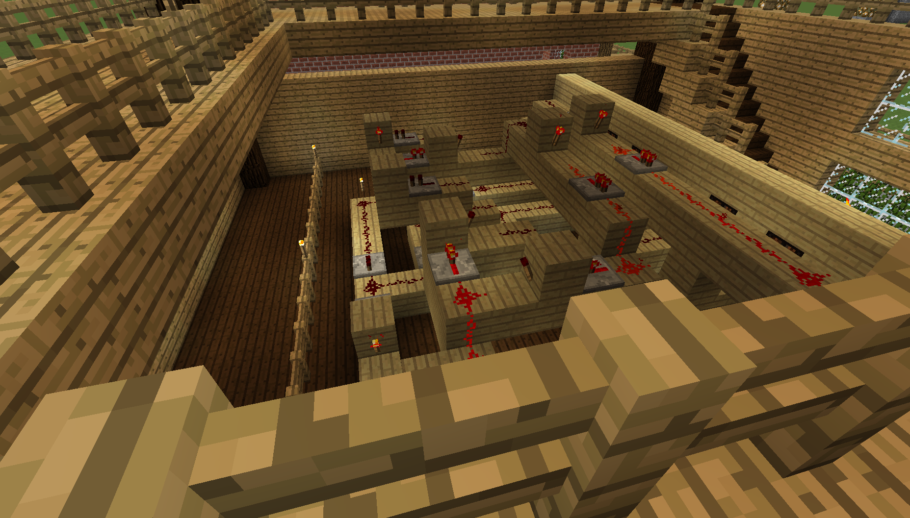

緑原電卓博物館建設記Part1＆ヒエロニムスの町に関するお知らせ執筆・投稿2018/05/23
ヒエロニムスの町に関するお知らせはこちらです。
こんちは。零坂です。
今回から、「緑原電卓博物館建設記」として、クリエイティブで製作している「緑原電卓博物館」の進捗状況を投稿してまいります。
早速ですが、緑原電卓博物館について説明をします。
緑原電卓博物館とは、最終的には電卓と同じように使える物を制作するのを目標に、様々なRS計算回路を製作し、一つの集合体芸術を作っていくプロジェクトであり、そのプロジェクトで完成する博物館のことです。
このプロジェクトの特徴は、「回路を作るだけじゃなくて景観も作る」というところです。
回路の制作プロセスは以下の通りです。
| １ |
回路を制作する。 |
| ２ |
回路を囲うように建物を建設する。 |
| ３ |
周りの道を整備する。 |
実は、昨日までに3つほど、そして今日は1つ芸術を完成させたのでご覧頂きましょう。
まず、最初は「2進数通り」です。何を言っているのか分からないと思われますので、ご覧頂きましょう。

「なんですか、これ」と言って下さい。解説する気になるんで。
これ、上空から見ると意味がわかります。
さっそく上空から見てみましょう。

これ、2進数で1から10を表現しているんです。
左から、1,2,3...というふうに数字が変化しています。
これは、後々建設する電卓に必要な2進数データです。
「あれ、これオブジェになるんじゃないかな」と思い、製作しました。
ちょっと芸術性ありますね。自分で言うのもなんだけど。
次は、いよいよ回路館です。
 |
| 「第一章 回路のはじまり」 |
今考えてみればボタンを押してピストンを動かす回路置けばよかった。
まあ、そんなことしてたら8760年経っても終わらなくなってしまうので省略しますが。
博物館っぽい説明文を作ってみました。

こちらの看板をご覧くだされば分かる通り、この回路はRSトーチのNOTとピストンANDだけで動いています。
回路もお見せしましょう。

後々になってくるとこれが非常にシンプルに思えてきます。多分。
次も回路館ですが、建物の外観が大きく違います。
 |
| 「第二章 トランジスタの発明」 |
これ、ハクメイとミコチを左耳で聞きつつ、時々チラ見しながら作りました。
木の根っこの家に住んでるキャラを見てて思いつきました。
この建物に入っているのは、RSトーチのANDとRSトーチのNOTを使った加算回路です。

看板書きが非常にシンプルですね。

開放感がすごいです。之で匠のリフォームの目標にはされないでしょう。
一応回路もお見せしましょう。

こんな感じです。正直言って小型化はめんどくさいです。
さて、これにて本日最後の紹介です。

|
| 「退館後の記憶」 |
これは、博物館を出た後のあの虚しさを表現してみたものです。
現時点で完全に表現しきれてないと思うので、続編があるかも知れません。
これにて建設記は終わりです。
ご閲覧ありがとうございました。
ここからは、公式ホームページヒエロニムスの町に関するお知らせです。
ヒエロニムスの町は、現在準備中です。
公式アカウントにつきましては、諸都合により当分の間準備できないことになりました。
暫くは、ヒエロニムスの町公式HPの記事リンクを零阪麻琴個人ツイッターより配信する形となります。
ヒエロニムスの町は今夏の開設を目指して準備をしておりますので、今暫くお待ち下さい。
記事一覧に戻る